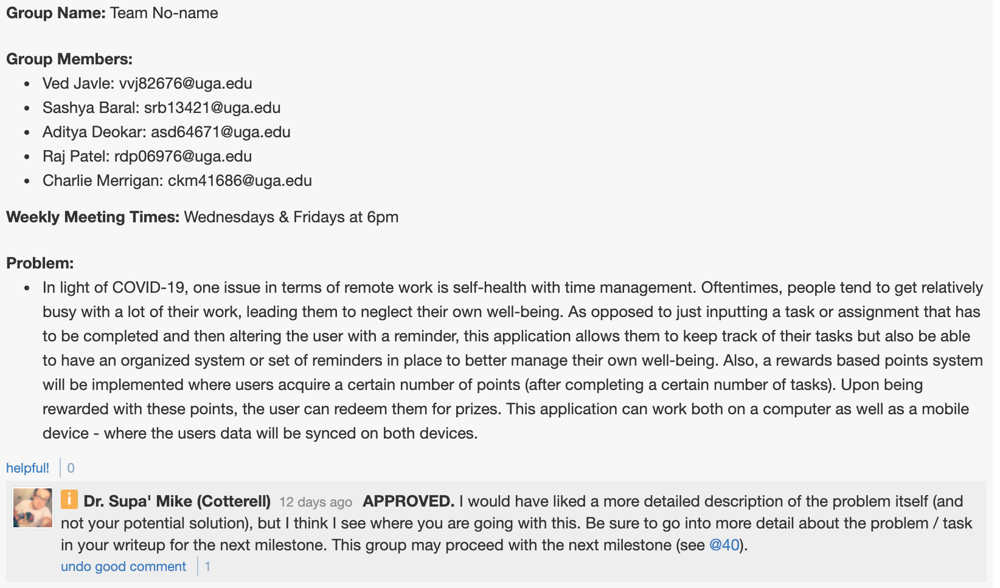
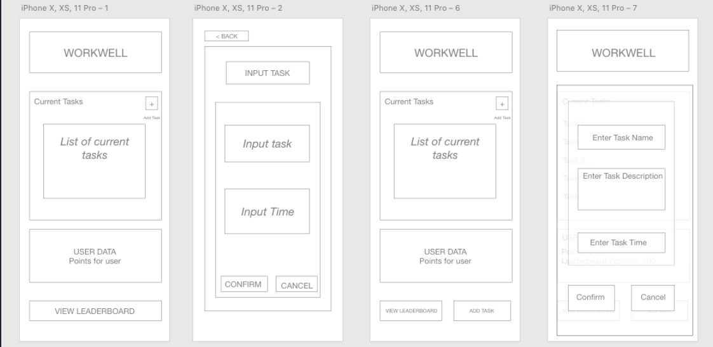
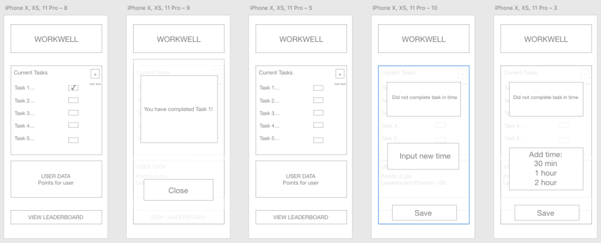
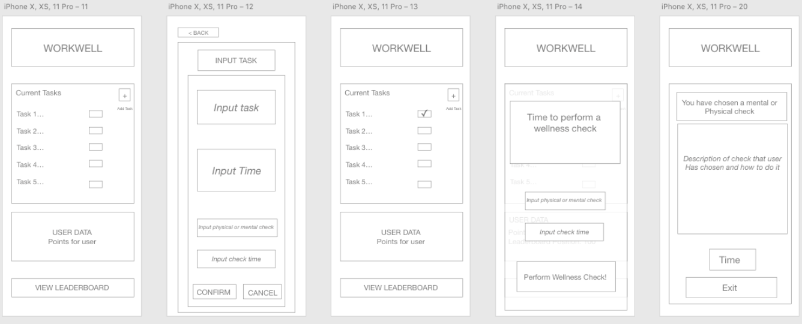
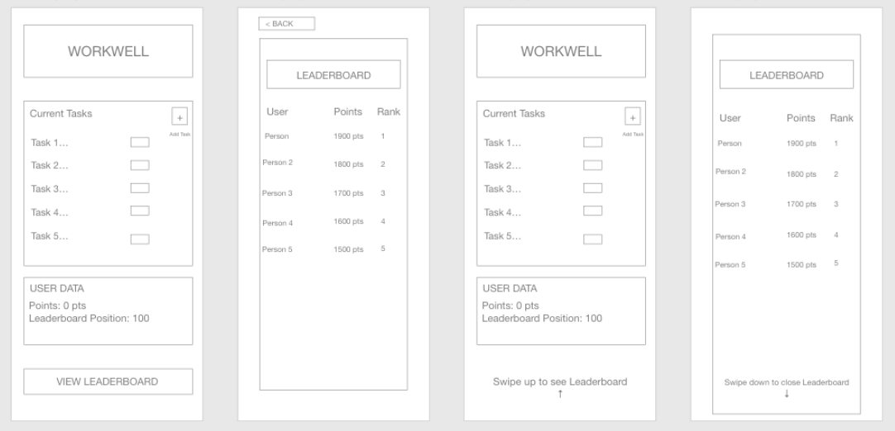
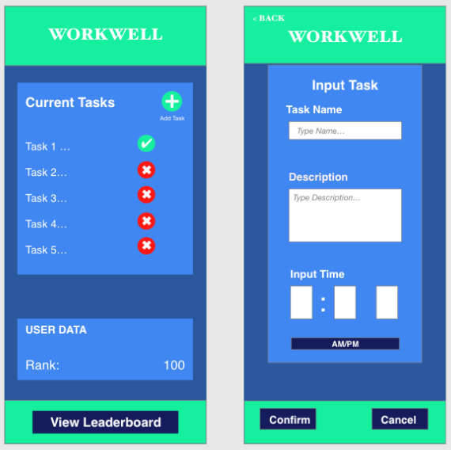
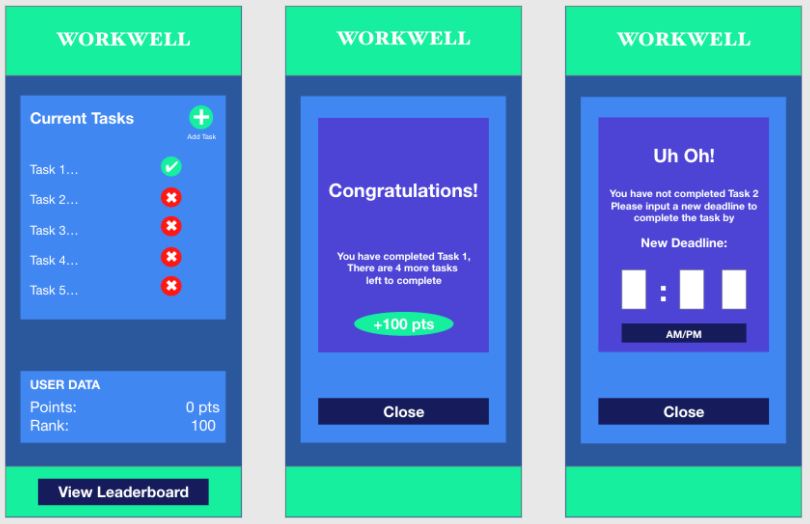
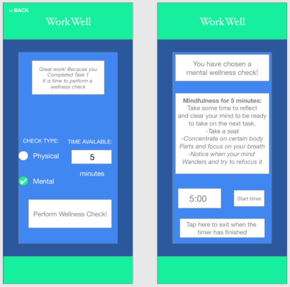
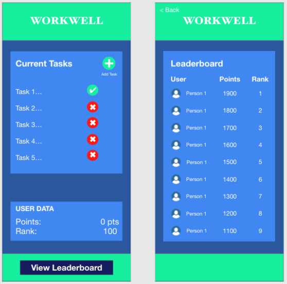

Context
In this project, a computing-related problem is identified in relation to the theme of remote work. Throughout the duration of this project, our team is reposible for evaluating the task and problem, developing interface design alternatives, implementing a prototype, and evaluating our overall design.
Group Members: Ved Javle, Raj Patel, Charlie Merrigan, Aditya Deokar, and Sashya Baral
Milestone 0: 09-06-2020
All research in UGA must first be approved by the UGA IRB. Prior to reviewing paperwork, students who want to conduct research must first complete and earn a certification. To earn te certification students must first complete an ethics and procedures training course on the Professional Education Portal (PEP).
Milestone 1: 09-20-2020
Groups must write a post on piazza outlining their group name, group members, and weekly meeting times. In addition groups must outline thier project and task to be approved by Dr. Cotterell prior to moving forward to any other milestones.
Milestone 2: 10-04-2020
Part A
Introduce Your Problem
In the pandemic, many people are subject to higher rates of anxiety, depression, conflicts with others, and lack of motivation [1]. With this, the lack of physical interaction and social interaction with others along with increased workloads because of the pandemic has created a remote work era that has been taxing for many people in their respective fields of work.
The problem of our study is regarding mental and physical health with remote work as a product of the COVID-19 pandemic. While working from home was something that employees enjoyed the convenience of, having to work from home every day, along with juggling the various outside commitments has been an extreme burden for many people [5]. As a result, the mental and physical health of individuals has deteriorated.
7 Stages of Interaction
To help individuals who have been negatively affected by an increase in remote work due to COVID-19 in terms of their physical and mental well being
Implementation of an application that allows users to input how much time they have, and the application will send them reminders throughout their day that will help them both with their physical and mental well being.
In terms of mental well being, meditation, mindfulness, and self-reflection will be some of the options that users can use to help them with their mental well being. For physical well-being, basic movements like walking, stretching, and getting out of their office chair to help stimulate their body/increase blood flow will be some of the physical options.
Based on the schedule of their workdays and the tasks that they have to complete throughout the day, users will be given alerts to their phone or the web app to help them improve their mental and physical well being. These alerts will help promote a more engaging experience for the user and potentially encourage productiveness by boosting a users overall well-being. The mental and physical well-being options can be easily implemented throughout a busy workday to allow users to refocus and recharge to be more productive and efficient with their work.
We perceive the results of executing the actions by making sure that the users are doing the tasks that are assigned throughout the day. This would be done as a rewards system, as users are completing actions, they will be given points that they try to accrue to increase their position on a global leaderboard as another motivating factor to complete tasks.
There will not be much cognitive load to interpret the results as the users will either complete the mental and physical well-being tasks, or they will not. In our case, we will measure success by whether the users will successfully report that they have completed a task or they have not. While users, in theory, could report that they have completed a task while not doing it, we will rely on a self-reporting system. If the users do not complete a task and report it as completed, they will only be hurting themselves.
As was stated earlier, the task is considered complete if the user does the physical or mental well-being task that is assigned to them. In our case, the goal will be met as when the users are completing these well-being tasks, they will be able to see a tangible increase in their mental and physical well-being.
Identify Potential Users
Our users will consist of primarily young adults to middle-age adults (typically in the age range of 20-45 years old). These users will most likely be college students and working-class individuals who have to do most of their work in a remote environment. According to PWC, employers are expecting a 30 percent shift towards working at home. This pandemic will also most likely possess long-term changes where companies will continue to promote working from (to some degree) as they will need to pay less for maintaining facilities and programs for in-person work [4].
The users will take part in the physical and mental well-being exercises that the application would encourage them to do. As mentioned previously these exercises include meditation, mindfulness, and self-reflection as well as basic movements like walking, stretching, and getting out of their office chair to help stimulate their body/increase blood flow. These exercises will be induced and facilitated through web alerts on either their computer or mobile version of this application.
The users will be rewarded with having better mental and physical well-being. This would encourage them to be more productive, confident, and focused as it removes these negative distractions from their schedule. Also, this system would allow them to be more consistent in maintaining good mental and physical well-being habits as this application will be used on almost a daily basis.
Part B
Describing Existing Solutions
There are a few existing solutions that are on the market that have parts of what our application does, but not to the full extent of what we are trying to accomplish. For example, there is a mobile app called Flora that forces users to stay focused on a task at hand, and if they become distracted, they will be forced to pay a certain dollar amount (that the user decides) to the company. The company then uses this money to plant trees [2]. The pros of this app are that it makes sure that users are focused on the task on hand that they are working on, or they will have to pay for becoming distracting. A con would be that while users are arguably more productive with this method, being so consumed by work is not good for your mental or physical well being. Headspace is another very popular application that encourages and teaches users how to meditate to help them with their mental health [3]. The pros of this app are that there is tangible evidence that users have increased their mental health through meditation, but throughout a workday, it may be hard to just meditate and it does not address the physical well-being aspect of working from home. Both of these solutions are very popular and are very well developed, but they only cater to certain aspects (productivity and meditation) of the challenges that remote work creates.
Describe Potential Guidelines and Solutions
The guidelines we will be using is the idea that we know that with the remote-work era that we are living in, it is hard to both do well at your job/school and be able to keep good mental and physical well-being. We want our users to be able to efficiently complete their work, but between tasks or assignments throughout their day, users will be prompted to engage in tasks/activities that will be given to them through the app to help with their physical/mental well-being. In terms of guidelines, we know that our users will be very busy. Because of this, users will be able to input how much time they have to complete one of the tasks the app will give them so they will be able to maximize the free time they have throughout their busy schedules. The app will operate on the principle of self-reporting, meaning that the users will be given tasks that will help them both physically and mentally, but in the end, it is their responsibility to make sure that they complete the task. As a sort of motivating factor to complete these tasks, the leaderboard will be used and the more tasks that users complete while they are using the app will allow them to increase their rank on the leaderboard.
Part C
Propose a Solution
In our solution, we would create an application to take input from the user about their time-schedule and intervals in which they receive a wellness check. Also, the user receives an option to specify whether they want to place more emphasis on either mental or physical wellness checks. Users can also conduct self-reporting practices to ensure that they complete the wellness check acts given by the application. Then after a user has completed a physical or mental well-being exercise, they will be awarded points that will have them ranked on a global leaderboard with other users who interact with the application.
Measuring Success
The application provides a feature for users to rate their experience with the application - where users can enter feedback to tweak and modify or adjust their experience in the future. There is no tangible way for us as creators to measure if someone has improved their physical or mental well-being through this application. That being said, we will rely on users self-reporting their experiences with the application to see how they have been able to improve their well-being, and possible changes to the app to further help our users. Along with this, the points that the users accrue will also be an indicator to see how engaged users are and how it might be positively affecting them.
Video Summary
Sources and References
[1] Jamie Ducharme. 2020. Depression Has Skyrocketed During the COVID-19 Pandemic, Study Says. (September 2020). Retrieved October 4, 2020 from https://time.com/5886228/depression-covid-19-pandemic/
[2] Flora. 2020. Flora: Green Productivity. Retrieved from https://flora.appfinca.com/en/
[3] Headspace. 2020. Headspace: Guided Meditation and Mindfulness. Retrieved from https://www.headspace.com/headspace-meditation-app
[4] PricewaterhouseCoopers. 2020. US Remote Work Survey. (2020). Retrieved October 4, 2020 from https://www.pwc.com/us/en/library/covid-19/us-remote-work-survey.html
[5] American Psychiatric Association. Working Remotely During COVID-19. Retrieved October 4, 2020 from http://workplacementalhealth.org/Employer-Resources/Working-Remotely-During-COVID-19
Milestone 3: 11-01-2020
Part A - User Experience Requirements
User Stories
As a new user, I want to be able to enter my information so that I can create a new account.
As an existing user, I want to login to my account so that I can access my profile.
As a user, I want to enter my activities and tasks into the application so that I can receive notifications to alert me for that task's deadline.
As a user, I want to be able to edit tasks so that I can change the details and deadlines for that corresponding task.
As a user, I want to be able to delete tasks so that I no longer have to see them if I do not deem them to be necessary, or if these tasks are not important enough to me.
As a user, if I do not have a task completed by a certain time I want to be able to add more time so that I will be able to complete the task within my time frame.
As a user, I want to be able to mark an activity as completed after I get a notification for it so that I know it is completed.
As a user, I want to see the activities I have to complete so that I can see how many/ what tasks I have yet to complete.
As a user, I want to see the activities I have completed so that I can see how many/ what tasks I have completed.
As a user, I want to be able to enter the amount of free time I have (measured in minutes) so that wellness check activity is assigned to me for the appropriate amount of time.
As a user, I want to be able to access the leaderboard, so I can see how many points I have accrued and where I am on the leaderboard.
Most Relevant User Stories - Justifications
User Story 3
This is important because the user needs to know when the task requirement is due. This will allow them to efficiently complete the tasks they need to do along with receiving a wellness check. Also the main point of this application is to remind users to complete required tasks.
User Story 6
This makes sure that if the user was not able to complete the task in the time that it was scheduled for, we want to give users additional time to be able to complete their tasks while still receiving wellness checks. We understand the users may not be able to complete tasks on time, so we want to give them the opportunity to complete the task in their time frame.
User Story 10
This user story is important because we want to be able to give the user a physical or mental wellness check that fits their time constraints. This is used because we want the user to make the best use of their time while improving their physical and mental wellbeing.
User Story 11
This is important because the user should be able to see how much they have accomplished while using the app, and it lets them know how they are faring with their tasks. Also, the user will be able to see where they are on the leaderboard, adding an incentive to complete tasks and perform wellness checks so that more points can be accrued to climb up the leaderboards.
Wireframes
Wireframe for User Story 3
Download Link Wireframe for User Story 6
Download Link Wireframe for User Story 10
Download Link Wireframe for User Story 11
Download Link Part B - Ideation and Preliminary Designs
Alternate User Stories
Alternate User Story 3
A user can press the plus button which will bring them to a new page that allows them to input the details for the task at hand and then add it to their list of tasks to do. Another way to complete this would be to have a button at the bottom of the page that will bring up a pop up box on the main page that will allow the user to enter in the details for their task to be completed.
Alternate User Story 6
A user can press a checkbox button, in a pop-up window, to indicate whether he has completed the task or not. If a user has completed the task the pop-up will display a message indicating that the task has been completed (i.e. a large checkbox icon or congratulations message), and then close out. If the task is not completed, the new page will prompt the user to type in a new deadline and then click a confirmation signifier - such as a button titled "confirm". The window will then close out and the application will resume to normal. Another way to go about this is instead of the user entering time, there will be quick time increments that the user can add to their deadline.
Alternate User Story 10
A user can enter their amount of time and type of check into the page that is presented so that wellness check activity is assigned to the user for the appropriate amount of time. An alternative way to complete this would be that users can enter the amount of time they think that they have when they are inputting the task into the task list, and then are given a wellness check using the preselected time and type.
Alternate User Story 11
A user can tap the View leaderboard label/button to view how they are doing with all the tasks that they have completed/done, and he can view his points. Another way a user can view the leaderboard is by swiping up on the homescreen. Swiping on the homescreen will lead the user to the leaderboards. Either the user can see the leaderboard on the home screen, or he can swipe. He can also just press a button to see the leaderboards.
Justification of Alternatives
Alternate User Story 3
Having a button at the bottom of the page will make it easy and clear to the user on how to bring up their user data. The button will act as an effective signifier for this function of creating a new task. Having it formatted as a pop up box will also make it very easy for this information to be the center of attention, and users will not have to navigate through pages.
Alternate User Story 6
Having a pop up window to indicate whether or not a task has been is helpful because it will close upon completion of a required task. This will ensure that the user checks the task off before he continues on the application. Entering the new time in will make it flexible for users to input the amount of time they want, while the quick select time might make it faster for them to add time.
Alternate User Story 10
Inputting the time and type of wellness check into the task list will make it very simple and logical to the user, and the user will be ready to perform their wellness check when their task is complete. The alternative is having the info of time and type of check later will allow the user to have more flexibility of what they want to do for their check, along with being fluid with their time constraints.
Alternate User Story 11
Swiping on the home screen will allow for a much bigger screen of the leaderboard. This screen will be more organized and contain a broader array of names. This will be a more cohesive look at the leaderboard compared to the original small screen of the leaderboard on the other page. The button for the leaderboard might make it easier to navigate because there are dedicated buttons that take you to and away from the page.
Part C - Detailed Designs
Justifications
User Story 3
We decided to go with a new page that the user is sent to after they create the add task button in the top right hand corner of the task box. We thought that a new page for adding a task would be easier for the user to access and use than a pop up box. On this new page, we decided that there would be 3 main fields: the task name, the description of the task, and the time that it needed to be completed by. This was chosen because while a name tells you part of the task, the description allows users to input more details about their task. Users can then confirm or cancel their selection, and it will take you back to the home page.
User Story 6
We decided to go with the option for the user to input how much time they want to have added to the task before they are reminded again. We chose this because we realized not all tasks can be completed by a deadline, and it is much easier and flexible for users to input how much time they want instead of giving them fixed times to add.
User Story 10
Here we decided to go with the option for users to enter the type of check they want to receive and the time they want to practice the check for when their task has been completed. After thinking about it, it made more sense for users to decide this when it is time to complete their task, as inputting it when you input your task means that if for some reason when it is time to perform the check if you need to change the type or time of the check, it is redundant to have to input information. Also, when the screen with the information of the check is up, users cannot leave the screen until the timer for the check is done. This is because we want users to perform the task for the time and not leave the page until the time of their task is done. [2]
User Story 11
We decided to go with the button that shows the leaderboard instead of having it be the swipe action. It is often easier for users to navigate the pages with physical buttons. With the swipe up/down action, it could be difficult to interact with having some accidental swipes, so having the button ensures that users will be able to tap and see what they are wanting to see.
High Fidelity Mockups
High Fidelity Mockup for User Story 3
Download Link High Fidelity Mockup for User Story 6
Download Link High Fidelity Mockup for User Story 10
Download Link High Fidelity Mockup for User Story 11
Download Link Video Summary
Sources and References
[1] Van der Linden. 2015. Psychology Today. Retrieved from: https://www.psychologytoday.com/us/blog/socially-relevant/201506/the-psychology-competition
[2] Mindful. 2018. Mindful: Healthy Mind, Healthy Life. Retrieved from: https://www.mindful.org/how-to-practice-mindfulness/
Milestone 4: 12-11-2020
Part A - High Fidelity Prototype
Part B - Testing Protocol
We plan on using the following testing methods:
Ask participants if they have become more productive while using the application. Ask them how their mental health is. Ask certain questions pertaining to mental wellness.
Measure productivity with users who use the application. Productivity = number of tasks completed.
Ask users to rate the app out of five stars. Ask them how the application can be improved. Also we can give the users some form of incentive to do the surveys and interviews.
If this app is fully implemented, the testing procedures include the following: assign people in the experiment a set of tasks to complete. A way to measure productivity is by seeing how many tasks they were able to complete out of the ones they inputted in the:
A set of users who are not using the productivity application
A set of users who are using the productivity application
When dealing with informed consent, we are not using any medication/substances that may harm them. We may have to ask the users/test-subjects personal information such as daily schedule, current mental state, and health condition. The test subject is also not going through any medical procedures. The data that we are using to measure productivity is the number of tasks completed. If a user completes more tasks, he/she is going to be more productive. We will also compare the number of tasks the user inputs and completes as a ratio. The higher the ratio, the higher the users' task completion which is also a signifier of their productivity. With this data, we will be able to identify and distinguish productive and unproductive users. Based on this, we can then further study and interview the productive peoples' habits and compare them with the unproductive users. This will help us find new ways that we can further maximize productivity and physical/mental well-being during the pandemic. Also, all communication will be done online or on the phone so that way we limit person to person contact and lower chances of spreading COVID-19.
Part C - Final Summary Video